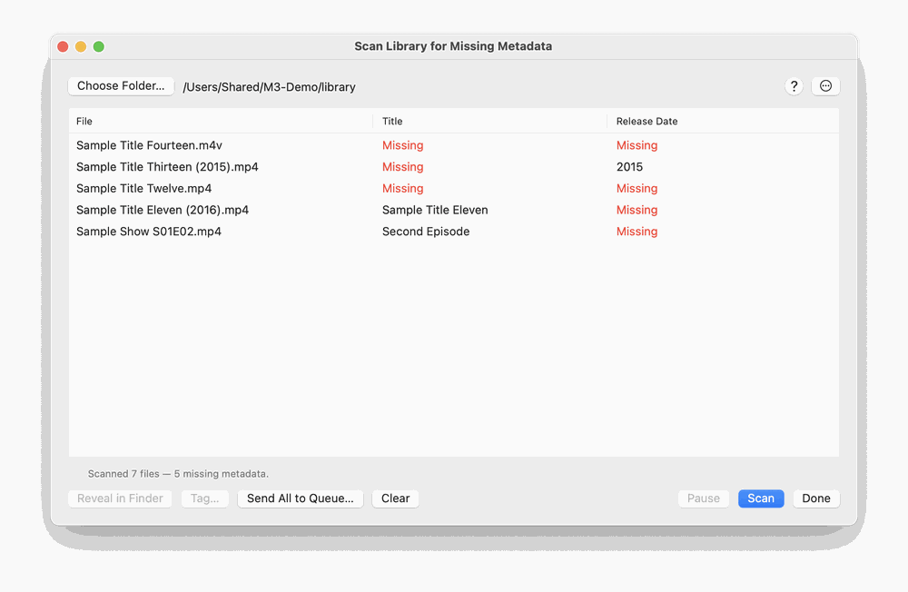
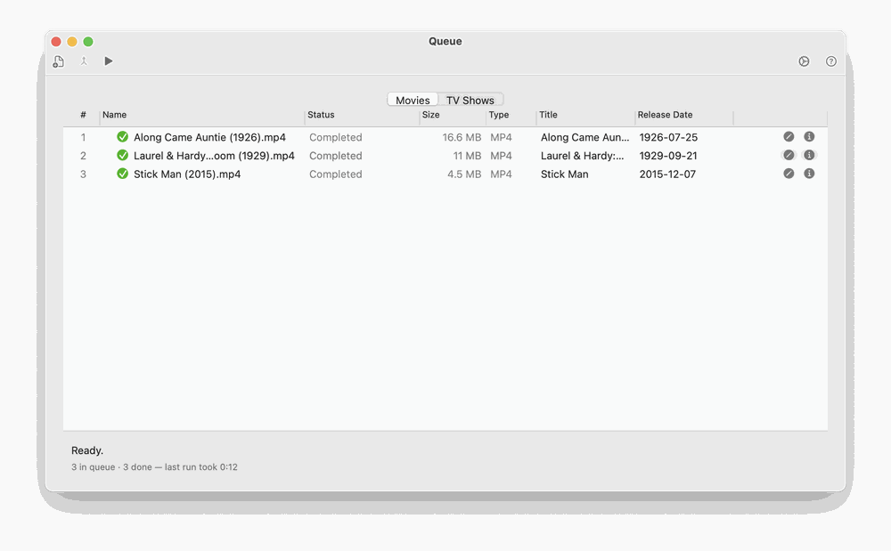
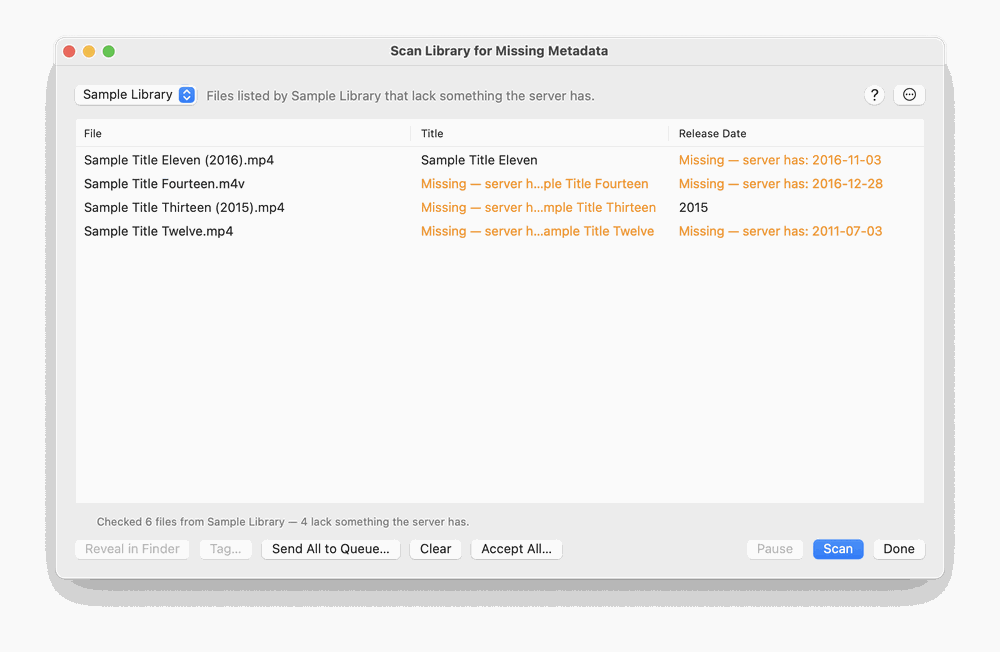

Choose Scan Library for Missing Metadata on the Welcome window. Pick a folder and click Scan. M3 walks the folder for finished .mp4, .m4v and .mov files and lists those missing a Title or Release Date. The gear button lists other tags (Rating and Studio among them) that you can tick to look for as well. The table has a File column and one column for each tag being checked, showing the file’s value, or a red Missing. Drag the edge of a column heading to resize it, drag a heading to move it, and click a heading to sort by it (an arrow shows the direction; files with a missing value come first). The window can be made larger and remembers its size, and the order, widths and sort of the columns. Double-click a file to open it in the editor. The buttons along the bottom are Pause, Scan and Done. While a scan is running, Pause lets it finish the file it is reading and wait, with the files found so far in the list; the button then reads Resume and carries on from the same place. Scan reads Stop while a scan is running and ends it, keeping what was found. Clear (or right-click → Clear List) empties the list once files are loaded, keeping the folder so you can scan again; no file is changed. It is off while a scan is running, so press Stop first.

To fix the gaps, right-click a tag cell and choose Edit…, type the value and press Return: it is written straight into that file (M3 keeps a copy of the file until the write has worked). Rating, artwork and other tags that are not plain text, numbers or dates are changed in the editor instead. To let the Queue find the metadata, select the files (Command-A selects all) and click Send Selected to Queue… (the button reads Send All to Queue… when nothing is selected), or right-click and choose Send to Queue for In-Place Edit…. M3 asks first. Each file is then edited where it sits: the Queue searches for its metadata and writes the tags into the file, with no copy and no move to your library. If Set output filename is on in the Queue options, the file is also renamed from its tags. The Queue shows the scan’s tag columns for these files, so you can watch the gaps being filled: each file starts with the values the scan found (a red Missing for a gap) and is read again when the Queue has finished it. The columns go away when no such file is left in the Queue. A scan on its own never changes a file; only these two commands do.

The scan reads only each file’s tags, not its tracks or chapters, so it is light on the drive, and the status line names the file it is reading. The gear button next to Scan shows the two tags that are always checked (Title and Release Date) and a list of every other tag from Metadata; tick any of them to have the scan look for those too. Your choice is remembered. A file that cannot be read within 20 seconds is listed as Unreadable (timed out) and the scan carries on; if three files in a row cannot be read, the scan stops and tells you to check the drive. Slow reads are written to the message log.
Scanning a library server. If a plugin that connects to your own media server (a library server) is installed, a Source pop-up appears beside the folder button. Choose Folder… for the scan above, or the server’s name to compare what the server holds with your files. Click Scan: M3 asks the server for its list of movies, finds each file at the path the server gives, reads its tags and lists only the files where the server has something the file lacks. Those entries are shown in orange as Missing — server has: followed by the server’s value. A movie the server lists whose file is not at that path shows File not found; the server and this Mac must see the same path, so a drive shared from another computer has to be mounted here under the same path.

To fill the gaps, right-click an orange cell and choose Accept Server Value to write that one tag into the file. Choose Accept Server Values… to do it for the selected files, or click Accept Selected… at the bottom (Accept All… when nothing is selected). M3 asks first, writes only tags the file lacks, keeps a copy of each file until its write has worked, and takes a file off the list once the server has nothing more to give it. Cast, rating and cover cannot be typed in the table, so they stay orange; Send to Queue fills them: for each file the Queue loads the server’s own item by its id, with no search, and adds only the tags the file lacks. Edit… on an orange cell starts with the server’s value, so Return accepts it. Changing the Source empties the list.